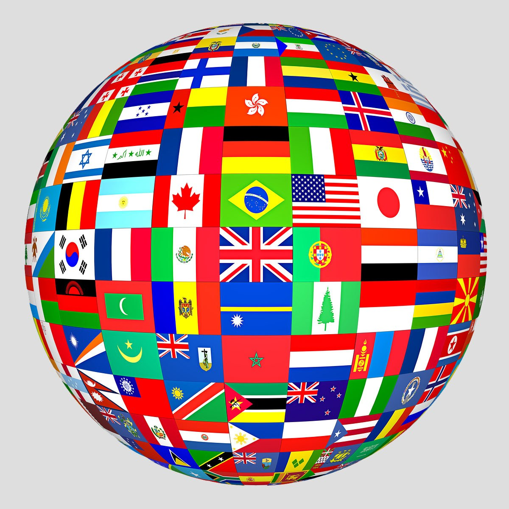

Study Abroad in Japan Scholarships

Study Abroad in Japan Scholarships
Wednesday, May 1, 2013
For each of the first three years of the grant we are providing scholarship to five students who will be studying abroad in Japan. The grant will provide needed support for students to study in longer study abroad programs. In addition, many students find it difficult to study abroad during the academic year owing to scheduling difficulties, so the summer is often viewed as an ideal time for such study. Therefore, we will also fund grants to support qualified students for summer study in Japan